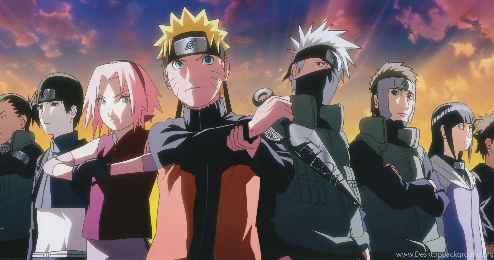

Explore various aspects of the Naruto series through the links below. Naruto, created by Masashi Kishimoto, has become a cultural phenomenon and one of the most beloved anime and manga series worldwide.
Naruto is a Japanese manga and anime series that debuted in 1999. It tells the story of Naruto Uzumaki, a young ninja who seeks recognition and dreams of becoming the Hokage, the leader of his village. The series explores themes of friendship, perseverance, and personal growth.
Naruto has had a significant impact on popular culture, influencing a wide range of media and entertainment. It has inspired numerous spin-offs, films, and merchandise. The series' unique characters, compelling storylines, and innovative ninja techniques have resonated with audiences worldwide.
Its success has led to a sequel series, "Naruto Shippuden," which continues the story of Naruto and his friends as they face new challenges and grow into adulthood.
The Naruto fanbase is incredibly passionate and diverse. Fans around the world have created a vast array of fan art, cosplay, and fan fiction inspired by the series. Conventions and fan events often feature Naruto-themed activities, and online communities continue to thrive with discussions and fan content.
Many fans appreciate the series for its deep character development and the emotional journey of its protagonists. Naruto's themes of overcoming adversity and the importance of family and friendship have touched the hearts of many.